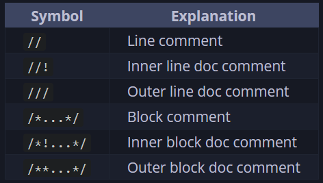
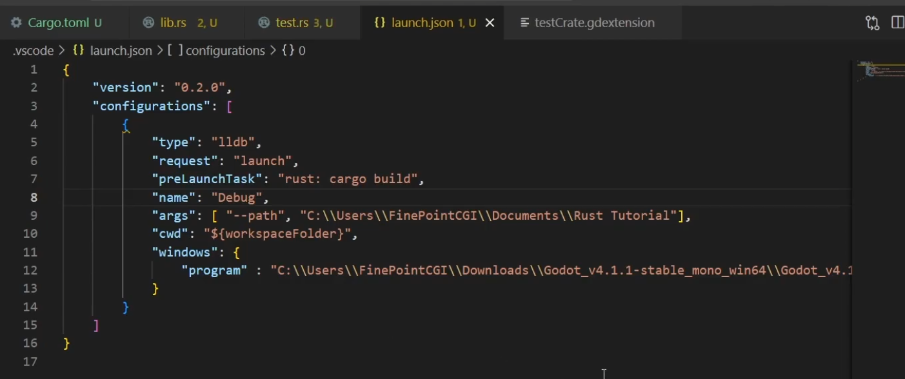
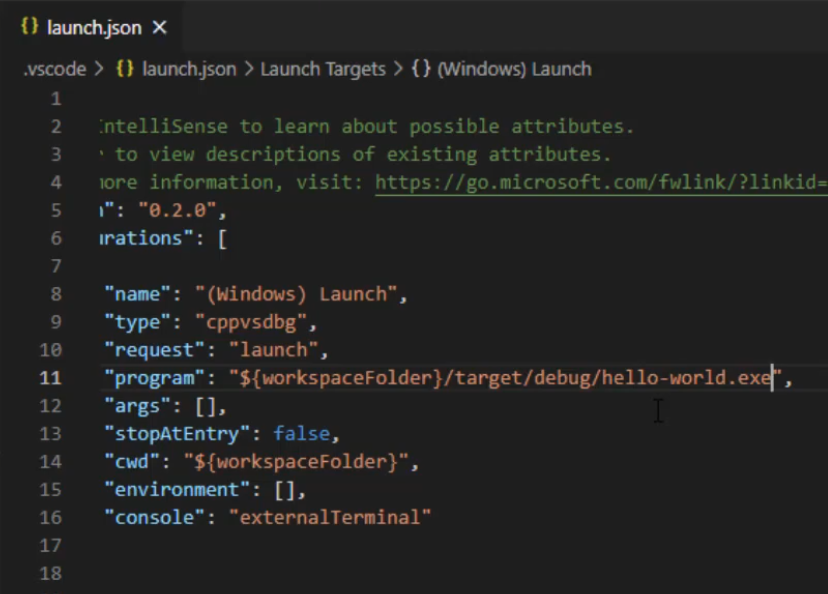
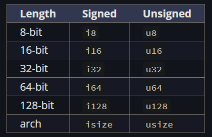
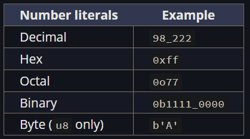

Rust
About
-
Keywords .
-
Default access control: Private.
Difficulty
-
Rust is known for being very complex, but it's as fast as C++; it’s safe and memory-safe, but complex with a steep learning curve.
-
'memory safe', 'borrow checker'.
-
"Too much type struggle."
-
"Go hides the complexity for you. Rust helps you understand it by exposing it."
Adoption
-
It's typically used for Databases, Compilers, Operating Systems, CLI Programs, WebAssembly, Server-Side Apps, Embedded Apps, Game Engines.
-
Linux.
-
It is slowly being converted from C to Rust.
-
Installation
Installation
Requirements
-
-
In case of problems with MinGW:
-
VSCode:
-
Rust-analyzer.
-
For IntelliSense.
-
-
LLDB Extension.
-
For debugging.
-
-
Problems with MinGW
-
I tested tons of things.
-
Deleted the .rustup folder from users/caior/ and reinstalled Rust using rustup.
-
It worked, but I’m not sure if that alone solved it.
-
Build for GCC
-
MSYS2 .
-
"MSYS2 is a collection of tools and libraries providing you with an easy-to-use environment for building, installing and running native Windows software."
-
"MSYS2 provides up-to-date native builds for GCC, mingw-w64, CPython, CMake, Meson, OpenSSL, FFmpeg, Rust, Ruby, etc."
-
"You will probably want to install some tools like the mingw-w64 GCC to start compiling projects. Run the following command:"
-
In the MSYS2 terminal:
-
pacman -S mingw-w64-x86_64-gcc. -
pacman -S mingw-w64-ucrt-x86_64-gcc.-
Didn’t work, possibly because it installs the UCRT version.
-
-
-
-
Query of installations:
-
pacman -Q
-
-
-
-
choco install mingw
-
-
"~Check which gcc is being used":
-
Get-Command x86_64-w64-mingw32-gcc
-
MSVCRT or UCRT runtime library?
-
Traditionally, the MinGW-w64 compiler used MSVCRT as the runtime library, which is available on all Windows versions.
-
Since Windows 10, Universal C Runtime ( UCRT ) is available as an alternative to MSVCRT.
-
Universal C Runtime can also be installed on earlier Windows versions (see: Update for Universal C Runtime in Windows ).
-
Unless you are targeting older versions of Windows, UCRT as a runtime library is the better choice, as it was written to better support recent Windows versions and provide better standards conformance (see also: Upgrade your code to the Universal CRT ).
Cargo
Documentation
-
cargo doc-
Builds the documentation for the local package and all dependencies. The output is placed in
target/docin rustdoc’s usual format.
-
Packages
-
It's a bundle of one or more crates that provides a set of functionality.
-
A package contains a Cargo.toml file that describes how to build those crates.
Creating a Package
-
cargo new NAME-
Compiles to a binary.
-
main.rs is used as the package root.
-
-
cargo new --lib NAME-
Compiles to a library.
-
lib.rs is used as the package root.
-
Compilation
-
cargo build-
Compile and generate an executable.
-
-
./executable_name-
Run the executable.
-
-
cargo check-
Compile without generating an executable.
-
Faster than
cargo build.
-
-
cargo run-
Compile, generate, and run the executable.
-
Cargo.toml
-
.
Cargo.lock
-
When you build a project for the first time, Cargo figures out all the versions of the dependencies that fit the criteria and then writes them to the Cargo.lock file. When you build your project again, Cargo will see that the Cargo.lock file exists and will use the versions specified there rather than figuring out versions again. This lets you have a reproducible build automatically. In other words, your project will remain at 0.8.5 until you explicitly upgrade, thanks to the Cargo.lock file.
-
Because the Cargo.lock file is important for reproducible builds, it’s often checked into source control with the rest of the code in your project.
Crates
-
It's a tree of modules.
Binary Crate
-
Must have a function called
mainthat defines what happens when the executable runs.
Library Crate
-
Doesn't have a
mainfunction, and they don’t compile to an executable. -
They define functionality intended to be shared with multiple projects.
-
Usually, when people say “crate”, they mean 'library crate'.
Crate Root
-
The crate root is a source file that the Rust compiler starts from and makes up the root module of your crate.
-
Usually symbolized by main.rs or lib.rs , depending if the Package is bin or lib.
-
-
Every package needs a Crate Root.
-
In the crate root file, you can declare new modules, like
mod garden;. -
The compiler will look for the module’s code in these places:
-
Inline, within curly brackets that replace the semicolon following
mod garden -
In the file src/garden.rs
-
In the file src/garden/mod.rs
-
Submodules
-
In any file other than the crate root, you can declare submodules. For example, you might declare
mod vegetables;in src/garden.rs . -
The compiler will look for the submodule’s code within the directory named for the parent module in these places:
-
Inline, directly following
mod vegetables, within curly brackets instead of the semicolon -
In the file src/garden/vegetables.rs
-
In the file src/garden/vegetables/mod.rs
-
Modules and Use
-
Let you control organization, scope, and path privacy
mod back_of_house {
pub struct Breakfast {
pub toast: String,
seasonal_fruit: String,
}
impl Breakfast {
pub fn summer(toast: &str) -> Breakfast {
Breakfast {
toast: String::from(toast),
seasonal_fruit: String::from("peaches"),
}
}
}
}
pub fn eat_at_restaurant() {
// Order a breakfast in the summer with Rye toast
let mut meal = back_of_house::Breakfast::summer("Rye");
// Change our mind about what bread we'd like
meal.toast = String::from("Wheat");
println!("I'd like {} toast please", meal.toast);
// The next line won't compile if we uncomment it; we're not allowed
// to see or modify the seasonal fruit that comes with the meal
// meal.seasonal_fruit = String::from("blueberries");
}
Super
-
Refers to the parent module.
Paths
-
A way of naming an item, such as a struct, function, or module.
Debug
Comments
-
 .
Proper printing
-
[#derive(Debug)]+"println!({:?}, x)"#[derive(Debug)] struct Rectangle { width: u32, height: u32, } impl Rectangle { fn area(&self) -> u32 { self.width * self.height } } fn main() { let rect1 = Rectangle { width: 30, height: 50, }; println!( "The area of the rectangle is {} square pixels.", rect1.area() ); }
VSCode Debug
-
LLDB extension installed.
-
launch.json file:
-
 .
-
 .
-
Used from the Native Debug Extension.
-
-
Error Handling
-
panic!-
Crashes the program.
-
Avoid using it.
-
-
assert!()-
Panics if the given condition is false.
-
-
.unwrap()-
.
-
-
.expect()-
.
-
LSP
Tests
-
#[cfg(test)]-
Used to mark code blocks that should be compiled only during testing .
-
Modules marked with this attribute are not compiled into the binary.
-
Where used :
-
Usually in modules (
mod) or other sections of code that should only be included in the binary during testing.
-
-
Behavior :
-
Any code within a block marked with
#[cfg(test)]will be ignored during normal compilation (not included in the final binary) and only compiled/executed during tests.
-
-
-
#[test]-
Used to mark a function as a test.
-
Functions marked with this attribute are not compiled into the binary.
-
Where used :
-
Directly before a function to be executed by Rust’s test framework.
-
-
Behavior :
-
The test framework recognizes functions with
#[test]as individual tests and executes them when runningcargo test.
-
-
-
cargo test-
Runs all tests.
-
Imports
Memory
-
Does not have a Garbage Collector.
Ownership
Borrow Checker
-
-
Quite interesting.
-
-
Video demonstrating 'Stack', 'Heap', 'Borrowing', and 'Ownership' .
-
The memory explanation is good, but the rest of the video is not well explained.
-
Lifetime
Syntax with
'
&i32 // a reference
&'a i32 // a reference with an explicit lifetime
&'a mut i32 // a mutable reference with an explicit lifetime
Usage and need
-
The return type needs a generic lifetime parameter on it because Rust can’t tell whether the reference being returned refers to
xory.fn longest(x: &str, y: &str) -> &str { if x.len() > y.len() { x } else { y } } -
This tells Rust that the string slice returned from the function will live at least as long as lifetime
'afn longest<'a>(x: &'a str, y: &'a str) -> &'a str { if x.len() > y.len() { x } else { y } } -
Example:
use std::fmt::Display; fn longest_with_an_announcement<'a, T>( x: &'a str, y: &'a str, ann: T, ) -> &'a str where T: Display, { println!("Announcement! {ann}"); if x.len() > y.len() { x } else { y } }
Requirements
-
The return lifetime of the function must be one of the lifetimes of its parameters.
-
Does not work :
fn longest<'a>(x: &str, y: &str) -> &'a str { let result = String::from("really long string"); result.as_str() }-
resultstops existing when the function scope ends, so its lifetime cannot be used.
-
-
Lifetime annotations become part of the function’s contract, similar to types in its signature.
Conclusion
-
"The Lifetime is NOT changed. It only creates relationships between the lifetimes of multiple references."
-
The generic lifetime
'awill get the concrete lifetime that equals the shorter of the lifetimes ofxandy. -
The returned reference will also be valid for the shorter lifetime of
xandy. -
"Is the smallest lifetime still valid?"
``
Symbols
-
Borrow
-
&
-
-
Namespace
-
::
algo::algo ::path // Path relative to the crate root, implicitly. self::path // Path relative to the crate root, explicitly. super::path // Path relative to the parent of the current module.-
The
::syntax is used for both associated functions and module namespaces.
-
Attributes
-
External attribute
-
#[meta]
-
-
Internal attribute
-
#![meta]
-
-
Invoke macro
-
something!()
-
-
Macro substitution
-
$something
-
-
Macro capture
-
$something:kind
-
Derive Macros
Definition
-
#[derive]is a convenient way to apply macros that automatically implement traits for an entire struct (or enum). When you use#[derive(...)], the compiler automatically generates the implementation for you. Without derive, you’d need to write it manually.
derive(debug)
-
Automatic implementation of the
Debugtrait, using#[derive(Debug)]:#[derive(Debug)] // Compiler implements Debug struct Point { x: i32, y: i32, } fn main() { let p = Point { x: 3, y: 4 }; println!("{:?}", p); // Output: Point { x: 3, y: 4 } } -
Manual implementation of the
Debugtrait, without#[derive(Debug)]:use std::fmt; struct Point { x: i32, y: i32, } // Manual implementation of the Debug trait impl fmt::Debug for Point { fn fmt(&self, f: &mut fmt::Formatter<'_>) -> fmt::Result { write!(f, "Point {{ x: {}, y: {} }}", self.x, self.y) } } fn main() { let p = Point { x: 3, y: 4 }; println!("{:?}", p); // Output: Point { x: 3, y: 4 } }
Operations
Numeric Operations
Arithmetic
-
Addition
-
+
-
-
Subtraction
-
-
-
-
Multiplication
-
*
-
-
Division
-
/
-
-
Remainder
-
%
-
Compound
-
All operators allow Operation + Assignment:
-
counter += 1
-
Logical Comparisons
Basic
-
== -
!= -
> -
< -
AND
-
&&
-
-
OR
-
||
-
-
NOT
Bitwise
-
AND
-
&
-
-
OR
-
|
-
-
XOR
-
^
-
-
L SHIFT
-
<<
-
-
R SHIFT
-
>>
-
Control Flow
Conditionals
Examples
-
Works :
if number < 10 { println!("algo"); } else if number < 22 { println!("outra coisa"); } else { println!("outra coisinha"); } -
Does not work :
let number = 3; if number { println!("number was three"); }-
Rust will not automatically try to convert non-Boolean types to a Boolean.
-
Ternary
```rust
let number: i32 = if 2 < 3 { 5 } else { 1 }
-
If the
ifandelsearms have value types that are incompatible, you'll get an error.
Loops
Loop
loop {
println!("again!");
if \condicional {
break;
}
}
let mut counter = 0;
let result = loop {
counter += 1;
if counter == 10 {
break counter;
}
};
-
break-
Exits the loop.
-
-
continue-
Skip over any remaining code in this iteration of the loop and go to the next iteration.
-
-
Labels
-
You can optionally specify a loop label on a loop that you can then use with
breakorcontinue.let mut count = 0; 'counting_up: loop { println!("count = {count}"); let mut remaining = 10; loop { println!("remaining = {remaining}"); if remaining == 9 { break; } if count == 2 { break 'counting_up; } remaining -= 1; } count += 1; } println!("End count = {count}");
-
While
let mut number = 3;
while number != 0 {
number -= 1;
}
For
let a = [10, 20, 30, 40, 50];
for element in a.iter() {
println!("the value is {}", element);
}
// Creates a sequence of numbers from 1 to 3.
for number in (1..4) {
println!("the value is {}", element);
}
// Same thing
for number in 1..4 {
println!("the value is {}", element);
}
Keywords
let
Characteristics
-
Does not work :
-
x = y = 6and have bothxandyhave the value6.
-
Typing
-
You cannot change the variable's type.
let mut spaces = " "; spaces = spaces.len();-
This will cause an error because
spacesattempts to change type from&strtousize.
-
Shadowing
-
Shadowing is different from marking a variable as
mutbecause we’ll get a compile-time error if we accidentally try to reassign to this variable without using theletkeyword. By usinglet, we can perform a few transformations on a value but have the variable be immutable after those transformations have been completed. -
Allowed :
-
Keeps the type:
let x = 5; let x = x + 1; -
Changes the type:
let spaces = " "; let spaces = spaces.len();
-
const
Differences from
let
-
You aren’t allowed to use
mutwith constants.-
Constants aren’t just immutable by default—they’re always immutable.
-
-
The type of the value must be annotated.
-
Constants can be declared in any scope, including the global scope, which makes them useful for values that many parts of code need to know about.
-
The last difference is that constants may be set only to a constant expression, not the result of a value that could only be computed at runtime.
-
Rust’s naming convention for constants is to use all uppercase with underscores between words.
-
Constants are valid for the entire time a program runs, within the scope in which they were declared.
-
Naming hardcoded values used throughout your program as constants is useful in conveying the meaning of that value to future maintainers of the code. It also helps to have only one place in your code you would need to change if the hardcoded value needed to be updated in the future.
Data Types
Type conversion
-
You need to specify the type with
:. -
String to Int :
let a: u32 = "42".parse().expect("Falha!"); -
&str to String :
let a = "texto"; // &str let b = a.to_string(); // Stringlet a = String::from("texto");
Kinds of types
-
Compound Types:
-
Tuples and Arrays.
-
-
Scalar Types:
-
Everything else.
-
Boolean
fn main() {
let t = true;
let f: bool = false;
}
Integers
-
 .
-
" arch " varies depending on the system architecture (32-bit or 64-bit).
-
The primary situation in which you’d use
isizeorusizeis when indexing some sort of collection.
-
-
Signed and unsigned refer to whether it’s possible for the number to be negative.
Number Literals
-
 .
-
Number literals can also use
_as a visual separator to make the number easier to read.
1_000
1000
Floats
-
All floating-point types are signed.
-
The default type is
f64because on modern CPUs, it’s roughly the same speed asf32but is capable of more precision.
fn main() {
let x = 2.0; // f64
let y: f32 = 3.0; // f32
}
Char
fn main() {
let c = 'z';
let z: char = 'ℤ'; // with explicit type annotation
let heart_eyed_cat = '😻';
}
-
"Your human intuition for what a “character” is may not match up with what a
charis in Rust."
Strings
-
-
At the end of the video there is a summary.
-
-
No null terminator.
-
All strings are valid UTF-8.
-
Immutable by default.
Append
-
Example:
-
With
format!let s1 = String::from("hello "); let s2 = String::from("world"); let s3 = format!("{}{}", s1, s2);-
This macro uses references so that this call doesn’t take ownership of any of its parameters.
-
-
With concatenation:
let s1 = String::from("hello "); let s2 = String::from("world"); let s3 = s1 + &s2; // s1 is moved. -
With
.pushor.push_str:let mut s = String::from("hello"); s.push_str("bar"); // Receives a string slice. s.push('!'); // Receives a char.
Accessing characters
for c in "hello world".chars() {
println!("{c}");
}
Placeholders
let x = 5;
let y = 10;
println!("x = {x} and y + 2 = {}", y + 2);
Literals
-
Raw strings :
-
They are the same:
let text = "he said \"goodbye\" and left"; let text = r#"he said "goodbye" and left"#;-
This is used to avoid having to use
\every time you want to use quotes inside strings. -
Very useful for RegEx.
-
-
Byte strings :
let http_ok = b"HTTP/1.1 200 OK\r\n"; let http_ok: &[u8; 17] = b"HTTP/1.1 200 OK\r\n";-
Creates a 'slice of bytes'.
-
Useful when dealing with network protocols that expect a byte sequence, such as HTTP.
-
Types
String (String)
let my_string: String = String::from("hello!");
-
Owned type.
-
**Use:
-
Create and modify strings.
-
Read files.
-
User inputs.
-
-
&str (string slice)
let my_string: &str = &my_string;
-
Borrowed type.
-
Not the owner, just has access.
-
-
Read-only.
-
It's a pointer to the start of the string and the length of the string.
-
**Use:
-
Read and analyze an existing string without changing it.
-
Parse a string
-
Search for a substring.
-
-
-
Static:
let my_string: &str = "hello world"; let my_string: &'static str = "hello world";-
Both represent the same thing.
-
The 'static' indicates the pointed value is guaranteed to be available for the entire runtime of the program.
-
Box<str> (boxed string slice)
-
Owned, non-growable, heap-allocated string slice.
-
"Freeze a string to prevent further modification".
let my_string: String = String::from("this is a long string");
let my_boxed_str: Box<str> = my_string.into_boxed_str();
-
This drops the capacity information, reducing memory usage.
Rc<str> (Reference counted string slice)
-
Shared, immutable string slice.
-
Not thread-safe.
-
"~duplicate an object without duplicating it in memory", something like that.
Arc<str> (Atomic reference counted string slice)
-
Same as
Rc<str>, but thread-safe. -
Useful when you want to use the string across different threads.
Vec<u8> (Vector of UTF-8 bytes)
-
It's basically the same thing as
String. -
Useful when dealing with non-UTF-8 encoded strings.
Specialized string types, less known
&mut str (mutable reference to a sequence of string bytes)
-
Normally avoided in idiomatic Rust code because it's complex and poses potential problems ensuring the content remains valid UTF-8.
Cow<'a, str> (copy on write)
-
I didn't quite understand it.
Interoperability
-
"Helps connect Rust code with other languages".
OsString, OsStr
-
Can contain any byte sequence, not just UTF-8.
Path
-
Deals with paths.
-
Used to inspect filesystem paths.
PathBuf
-
"mutable and owned version of a path".
CString, CStr
-
Useful when interacting with C code that expects a null terminator.
Tuples
-
Tuples have a fixed length: once declared, they cannot grow or shrink in size.
-
The types of the different values in the tuple don’t have to be the same.
Creation
let tup: (i32, f64, u8) = (500, 6.4, 1);
Access
-
Via Index:
let x: (i32, f64, u8) = (500, 6.4, 1); let five_hundred = x.0; let six_point_four = x.1; let one = x.2; -
Via Destructuring:
let tup = (500, 6.4, 1); let (x, y, z) = tup; println!("The value of y is: {y}");
Arrays
-
Every element of an array must have the same type.
-
Arrays have a fixed length.
Creation
-
Defining values manually:
let a = [1, 2, 3, 4, 5]; let b: [i32; 5] = [1, 2, 3, 4, 5]; // [Type; number_of_elements] -
Creating with identical elements:
let a = [3; 5]; // Same thing. let b = [3, 3, 3, 3, 3];
Access
let a = [1, 2, 3, 4, 5];
let first = a[0];
let second = a[1];
-
Out of Bounds :
-
If the index is out of bounds, Rust will panic.
-
In many low-level languages, this kind of check is not done, and when you provide an incorrect index, invalid memory can be accessed. Rust protects you against this kind of error by immediately exiting instead of allowing the memory access and continuing.
-
Data Types: Collections
-
The data these collections point to is stored on the heap, which means the amount of data does not need to be known at compile time and can grow or shrink as the program runs.
Vectors
-
Is a similar collection type to the Array, provided by the standard library, that is allowed to grow or shrink in size.
Creation
let mut v = Vec::new();
v.push(5);
v.push(6);
v.push(7);
v.push(8);
let v = vec![1, 2, 3];
Access
-
Without handling Out of Bounds:
let v = vec![1, 2, 3, 4, 5]; let third: &i32 = &v[2]; println!("The third element is {third}"); -
Handling Out of Bounds:
let third: Option<&i32> = v.get(2); match third { Some(third) => println!("The third element is {third}"), None => println!("There is no third element."), } -
Getting all elements:
let v = vec![100, 32, 57]; for i in &v { println!("{i}"); } -
Mutating with the
*dereference operator.let mut v = vec![100, 32, 57]; for i in &mut v { *i += 50; }
Hash Maps
-
You need to import the collection.
use std::collections::HashMap;
let mut scores = HashMap::new();
scores.insert(String::from("Blue"), 10);
scores.insert(String::from("Yellow"), 50);
for (key, value) in &scores {
println!("{key}: {value}");
}
println!("{scores:?}");
Functions
fn main() {
print_labeled_measurement(5, 'h');
}
fn print_labeled_measurement(value: i32, unit_label: char) {
println!("The measurement is: {value}{unit_label}");
}
main
-
"You’ve already seen one of the most important functions in the language: the
mainfunction, which is the entry point of many programs".
Where to put functions
-
Rust doesn’t care where you define your functions, only that they’re defined somewhere in a scope that can be seen by the caller.
-
Nice.
-
Declaration
-
You must declare the type of each parameter.
Return
fn five() -> i32 {
5
}
fn main() {
let x = five();
println!("The value of x is: {x}");
}
-
If there is a return, the return type must be specified.
-
Using the
returnkeyword is not necessary. -
If
returnis omitted, do not use a;on the return line.
Getters
-
Often, but not always, when we give a method the same name as a field we want it to only return the value in the field and do nothing else. Methods like this are called getters , and Rust does not implement them automatically for struct fields.
-
Getters are useful because you can make the field private but the method public, and thus enable read-only access to that field as part of the type’s public API.
Closures
-
Definition :
-
They are anonymous functions that capture and use variables from the scope where they were defined.
-
-
GDScript :
-
Exactly the same as GDScript. In GDScript, anonymous functions are all closures.
-
-
Uses
||. -
Example:
let mut list = vec![1, 2, 3]; println!("Before defining closure: {list:?}"); let mut borrows_mutably = || list.push(7); borrows_mutably(); println!("After calling closure: {list:?}");-
Output:
Before defining closure: [1, 2, 3] After calling closure: [1, 2, 3, 7]
-
Structs
-
Unlike with tuples, in a struct you’ll name each piece of data so it’s clear what the values mean. Adding these names means that structs are more flexible than tuples: you don’t have to rely on the order of the data to specify or access the values of an instance.
Creation
struct User {
active: bool,
username: String,
email: String,
sign_in_count: u64,
}
-
Tuple Structs :
struct Color(i32, i32, i32); struct Point(i32, i32, i32); fn main() { let black = Color(0, 0, 0); let origin = Point(0, 0, 0); }
Creating methods
-
The struct methods' first parameter is always
self, which represents the instance of the struct the method is being called on.-
The
&selfis actually short forself: &Self.-
The type
Selfis an alias for the type that theimplblock is for.
-
-
Methods can take ownership of
self, borrowselfimmutably, as we’ve done here, or borrowselfmutably, just as they can any other parameter. -
We chose
&selfhere, as we don’t want to take ownership, and we just want to read the data in the struct, not write to it.
-
-
All functions defined within an
implblock are called associated functions because they’re associated with the type named after theimpl.-
Everything within this
implblock will be associated with theRectangletype.
-
#[derive(Debug)]
struct Rectangle {
width: u32,
height: u32,
}
impl Rectangle {
fn area(&self) -> u32 {
self.width * self.height
}
}
fn main() {
let rect1 = Rectangle {
width: 30,
height: 50,
};
println!(
"The area of the rectangle is {} square pixels.",
rect1.area()
);
}
-
Using multiple
impl-
There’s no reason to separate these methods into multiple
implblocks here, but this is valid syntax:
impl Rectangle { fn area(&self) -> u32 { self.width * self.height } } impl Rectangle { fn can_hold(&self, other: &Rectangle) -> bool { self.width > other.width && self.height > other.height } } -
Creating an instance
-
Directly :
let user1 = User { active: true, username: String::from("someusername123"), email: String::from("someone@example.com"), sign_in_count: 1, }; -
"Builder" :
fn build_user(email: String, username: String) -> User { User { active: true, username: username, // can be written just 'username' email: email, // can be written just 'email' sign_in_count: 1, } } -
Constructors :
-
Associated functions that aren’t methods are often used for constructors that will return a new instance of the struct.
-
These are often called
new, butnewisn’t a special name and isn’t built into the language. -
For example, we could choose to provide an associated function named
squarethat would have one dimension parameter and use that as both width and height, thus making it easier to create a squareRectanglerather than having to specify the same value twice
-
impl Rectangle { fn square(size: u32) -> Self { Self { width: size, height: size, } } }-
The
Selfkeywords in the return type and in the body of the function are aliases for the type that appears after theimplkeyword, which in this case isRectangle.let sq = Rectangle::square(3);
-
Access
fn main() {
let mut user1 = User {
active: true,
username: String::from("someusername123"),
email: String::from("someone@example.com"),
sign_in_count: 1,
};
user1.email = String::from("anotheremail@example.com");
}
-
Note that the entire instance must be mutable; Rust doesn’t allow us to mark only certain fields as mutable.
-
No need for -> access operator :
-
Rust automatically adds in
&,&mut, or*soobjectmatches the signature of the method.
(&p1).distance(&p2); // Same thing p1.distance(&p2); -
Traits
-
Allows sharing methods.
-
Polymorphism is done via Traits + Generics.
-
"Similar to Interfaces in other languages".
-
Complex example of using Traits to constrain accepted implementation types .
-
Around ~{10:00} shows the final part of the code.
-
Implementing a Trait for a Struct
-
The functions inside the Trait may have no implementation or a default implementation that can be overridden by the implementing type.
pub trait Summary {
fn summarize(&self) -> String;
}
pub struct NewsArticle {
pub headline: String,
pub location: String,
pub author: String,
pub content: String,
}
pub struct Tweet {
pub username: String,
pub content: String,
pub reply: bool,
pub retweet: bool,
}
impl Summary for NewsArticle {
fn summarize(&self) -> String {
format!("{}, by {} ({})", self.headline, self.author, self.location)
}
}
impl Summary for Tweet {
fn summarize(&self) -> String {
format!("{}: {}", self.username, self.content)
}
}
Traits as types and Trait Bounds
-
Ex1 : "Accepts anything that implements Summary".
// Syntax sugar for the version below. pub fn notify(item: &impl Summary) { println!("Breaking news! {}", item.summarize()); } // Same thing, represented via a "trait bound". pub fn notify<T: Summary>(item: &T) { println!("Breaking news! {}", item.summarize()); } -
Ex2 :
pub fn notify(item1: &impl Summary, item2: &impl Summary) { } // Same thing, but the "trait bound" infers directly that the types of 'item1' and 'item2' must be the same. pub fn notify<T: Summary>(item1: &T, item2: &T) { } -
Ex3 :
pub fn notify(item: &(impl Summary + Display)) { } // Same thing, but using "trait bound". pub fn notify<T: Summary + Display>(item: &T) { } -
Ex4 : Use of
where, with the sole purpose of avoiding a very long signature.
fn some_function<T: Display + Clone, U: Clone + Debug>(t: &T, u: &U) -> i32 {
}
// Same thing.
fn some_function<T, U>(t: &T, u: &U) -> i32
where
T: Display + Clone,
U: Clone + Debug,
{
Differences between Traits and Abstract Classes in C#
-
Multiple inheritance :
-
Traits in Rust allow multiple implementations . A type can implement several traits, while in C#, a class can only directly inherit from one abstract class (but can implement multiple interfaces).
-
-
No class hierarchy :
-
Rust has no class hierarchy. Traits are independent from each other and are not part of an inheritance structure like abstract classes in C#. This avoids the rigidity of single inheritance found in C#.
-
-
No state or fields :
-
Traits in Rust cannot contain fields (state) , while abstract classes in C# can. Traits define only behavior, without storing data.
-
-
Implementing traits for external types :
-
In Rust, you can implement traits for types defined outside your control (provided you defined the trait or the type). This is not allowed with abstract classes in C#.
-
-
Generics vs. dynamic typing :
-
Traits in Rust often use generics to determine behavior at compile time. In C#, polymorphism via abstract classes is often based on dynamic typing at runtime.
-
Enums
-
Enums .
Similarities between Enums and Structs
enum IpAddr {
V4(u8, u8, u8, u8),
V6(String),
}
let home = IpAddr::V4(127, 0, 0, 1);
let loopback = IpAddr::V6(String::from("::1"));
-
The name of each enum variant that we define also becomes a function that constructs an instance of the enum.
enum Message { Quit, Move { x: i32, y: i32 }, Write(String), ChangeColor(i32, i32, i32), }-
Quithas no data associated with it at all. -
Movehas named fields, like a struct does. -
Writeincludes a singleString. -
ChangeColorincludes threei32values.
-
-
We’re also able to define methods on enums using
impl.impl Message { fn call(&self) { // method body } } let m = Message::Write(String::from("hello")); m.call();
Options
Definition
enum Option<T> {
None,
Some(T),
}
let some_number = Some(5);
let some_char = Some('e');
let absent_number: Option<i32> = None;
as_mut
-
The
as_mutmethod is a method of optional types , likeOption<T>. -
It is used to convert an
Option<T>into anOption<&mut T>. This allows accessing the contained value mutably without moving the value.
let mut opt: Option<String> = Some(String::from("Hello"));
if let Some(value) = opt.as_mut() {
value.push_str(", world!"); // Modifies the contained value
}
println!("{:?}", opt); // Output: Some("Hello, world!")
The
?
operator
-
Without
?:fn add_last_numbers(stack: &mut Vec<i32>) -> Option<i32> { let a = stack.pop(); let b = stack.pop(); match (a, b) { (Some(x), Some(y)) => Some(x + y), _ => None, } } -
With
?:fn add_last_numbers(stack: &mut Vec<i32>) -> Option<i32> { Some(stack.pop()? + stack.pop()?) }
Adapters for working with references
-
as_refconverts from&Option<T>toOption<&T>. -
as_mutconverts from&mut Option<T>toOption<&mut T>. -
as_derefconverts from&Option<T>toOption<&T::Target>. -
as_deref_mutconverts from&mut Option<T>toOption<&mut T::Target>. -
as_pin_refconverts fromPin<&Option<T>>toOption<Pin<&T>>. -
as_pin_mutconverts fromPin<&mut Option<T>>toOption<Pin<&mut T>>.
Unwrapping
-
.
Extracting the contained value
-
expectpanics with a provided custom message. -
unwrappanics with a generic message. -
unwrap_orreturns the provided default value. -
unwrap_or_defaultreturns the default value of the typeT(which must implement theDefaulttrait). -
unwrap_or_elsereturns the result of evaluating the provided function.
If let
let config_max = Some(3u8);
if let Some(max) = config_max {
println!("The maximum is configured to be {max}");
}
Matching
fn plus_one(x: Option<i32>) -> Option<i32> {
match x {
None => None,
Some(i) => Some(i + 1),
}
}
let five = Some(5);
let six = plus_one(five);
let none = plus_one(None);
Result
-
Result<T, E>is the type used for returning and propagating errors. -
It is an enum with the variants,
Ok(T), representing success and containing a value, andErr(E), representing error and containing an error value.
enum Result<T, E> {
Ok(T),
Err(E),
}
#[derive(Debug)]
enum Version { Version1, Version2 }
fn parse_version(header: &[u8]) -> Result<Version, &'static str> {
match header.get(0) {
None => Err("invalid header length"),
Some(&1) => Ok(Version::Version1),
Some(&2) => Ok(Version::Version2),
Some(_) => Err("invalid version"),
}
}
let version = parse_version(&[1, 2, 3, 4]);
match version {
Ok(v) => println!("working with version: {v:?}"),
Err(e) => println!("error parsing header: {e:?}"),
}
The
?
operator
-
The operator is defined to perform an early return of a value out of the function
-
The
?operator can only be used in functions whose return type is compatible with the value the?is used on.-
We’re only allowed to use the
?operator in a function that returnsResult,Option, or another type that implementsFromResidual. -
By default, use
Result.
-
-
Usage :
use std::fs::File; use std::io::{self, Read}; fn read_username_from_file() -> Result<String, io::Error> { let mut username_file = File::open("hello.txt")?; let mut username = String::new(); username_file.read_to_string(&mut username)?; Ok(username) }use std::fs::File; use std::io::{self, Read}; fn read_username_from_file() -> Result<String, io::Error> { let mut username = String::new(); File::open("hello.txt")?.read_to_string(&mut username)?; Ok(username) } -
Ex1 :
-
Without
?:use std::fs::File; use std::io::prelude::*; use std::io; struct Info { name: String, age: i32, rating: i32, } fn write_info(info: &Info) -> io::Result<()> { // Early return on error let mut file = match File::create("my_best_friends.txt") { Err(e) => return Err(e), Ok(f) => f, }; if let Err(e) = file.write_all(format!("name: {}\n", info.name).as_bytes()) { return Err(e) } if let Err(e) = file.write_all(format!("age: {}\n", info.age).as_bytes()) { return Err(e) } if let Err(e) = file.write_all(format!("rating: {}\n", info.rating).as_bytes()) { return Err(e) } Ok(()) } -
With
?:use std::fs::File; use std::io::prelude::*; use std::io; struct Info { name: String, age: i32, rating: i32, } fn write_info(info: &Info) -> io::Result<()> { let mut file = File::create("my_best_friends.txt")?; // Early return on error file.write_all(format!("name: {}\n", info.name).as_bytes())?; file.write_all(format!("age: {}\n", info.age).as_bytes())?; file.write_all(format!("rating: {}\n", info.rating).as_bytes())?; Ok(()) }
-
Adapters for working with references
-
as_refconverts from&Result<T, E>toResult<&T, &E>. -
as_mutconverts from&mut Result<T, E>toResult<&mut T, &mut E>. -
as_derefconverts from&Result<T, E>toResult<&T::Target, &E>. -
as_deref_mutconverts from&mut Result<T, E>toResult<&mut T::Target, &mut E>.
Unwrapping
-
These methods extract the contained value in a
Result<T, E>when it is theOkvariant. -
-
expectpanics with a provided custom message. -
unwrappanics with a generic message. -
unwrap_orreturns the provided default value. -
unwrap_or_defaultreturns the default value of the typeT(which must implement theDefaulttrait). -
unwrap_or_elsereturns the result of evaluating the provided function.
-
-
The panicking methods
expectandunwraprequireEto implement theDebugtrait. -
These methods extract the contained value in a
Result<T, E>when it is theErrvariant. -
They require
Tto implement theDebugtrait. -
-
expect_errpanics with a provided custom message. -
unwrap_errpanics with a generic message.
-
Match
#[derive(Debug)] // so we can inspect the state in a minute
enum UsState {
Alabama,
Alaska,
// --snip--
}
enum Coin {
Penny,
Nickel,
Dime,
Quarter(UsState),
}
fn value_in_cents(coin: Coin) -> u8 {
match coin {
Coin::Penny => {
println!("Lucky penny!");
1
}
Coin::Nickel => 5,
Coin::Dime => 10,
Coin::Quarter(state) => {
println!("State quarter from {state:?}!");
25
}
}
}
-
Pattern :
-
The value
Coin::Penny.
-
-
Separator :
-
=>operator.
-
Examples
let x = 1;
match x {
1 | 2 | 3 => println!("1 or 2 or 3");
4..=8 => println!("from 4 to 8, including 8");
'a'...='j' => println!("from a to j, including j");
_ => println!("anything");
}
Exhaustiveness
-
If not all options are considered in the match, it will panic.
-
You can use the
_symbol to guarantee that all options are covered.let dice_roll = 9; match dice_roll { 3 => add_fancy_hat(), 7 => remove_fancy_hat(), _ => reroll(), } fn add_fancy_hat() {} fn remove_fancy_hat() {} fn reroll() {} -
You can use the unit value
()to indicate that nothing happens in a branch:let dice_roll = 9; match dice_roll { 3 => add_fancy_hat(), 7 => remove_fancy_hat(), _ => (), } fn add_fancy_hat() {} fn remove_fancy_hat() {}
If Let
-
You can handle values that match one pattern while ignoring the rest.
let config_max = Some(3u8);
if let Some(max) = config_max {
println!("The maximum is configured to be {max}");
}
-
What I understood is that
if letis basically treated like a new keyword, kinda.... -
I found it a bit confusing because it seems like I'm evaluating the return value of the operation
let Some(max), which doesn't make sense, consideringletdoesn't return anything.
Iterator
-
It is a trait that requires implementing a single method:
next.
pub trait Iterator {
type Item;
fn next(&mut self) -> Option<Self::Item>;
}
Game Dev
-
-
Getting started in GameDev with Rust.
-
Several useful resources.
-
List of engines.
-
Bevy
Impressions
-
Holy moly, Rust is intense for Game Dev.... It doesn't sound fun.
-
I give the same arguments for the Godot Rust binding.
-
I don't know if it's more correct to use an engine in Bevy, or a binding for Godot.
-
My impression is that Bevy would certainly be a more pleasant experience, despite having fewer features, probably.
-
It's hard to decide exactly that without a direct comparison between the two engines and Bevy is still in an experimental state.
-
Sources
-
-
Updates and videos about Bevy, ECS and Rust.
-